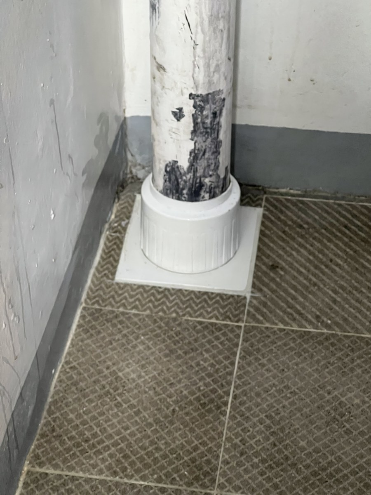
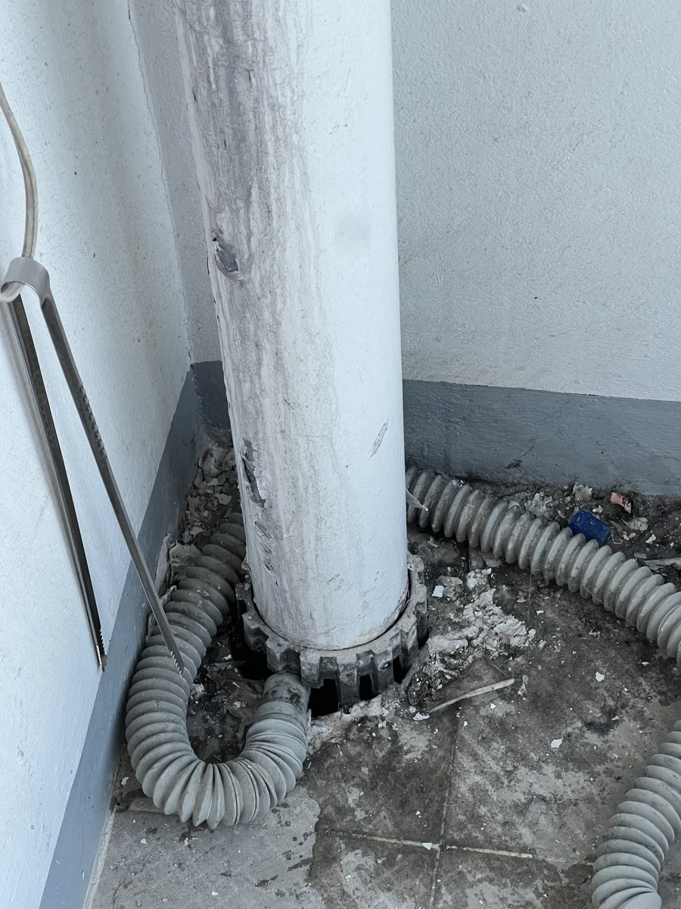
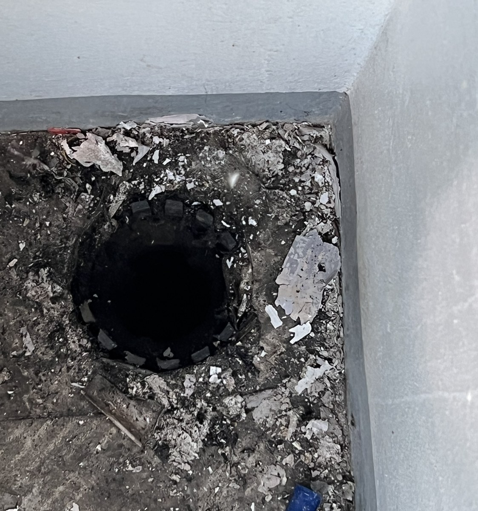
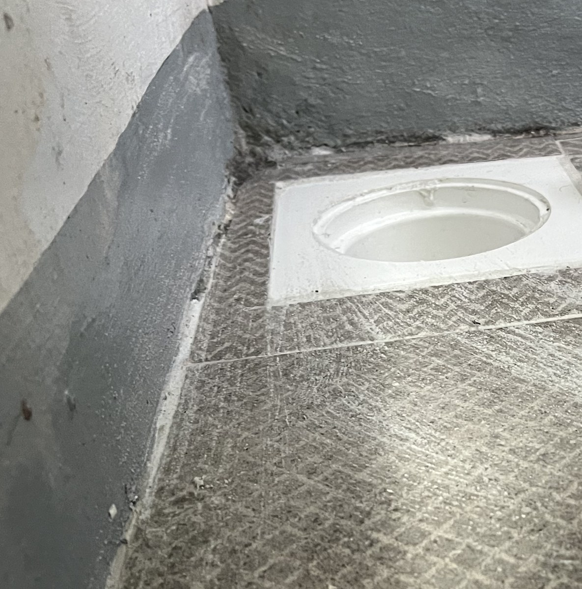

대전 중구 오류동 삼성아파트 우수관 하부 부속 작업｜검은 부속 자리를 흰색 부속과 사각 받침으로

작업 핵심
현장 작업 한눈에 보기
- 현장
- 오류동 삼성아파트 · 우수관 1곳
- 문제
- 우수관 아래 검은 톱니 모양 부속
둘레 바닥의 부스러기 - 작업
- 관 들어내기 · 바닥 연결 입구 드러내기
흰색 사각 받침 놓기 · 관 아래 흰색 부속 마감 - 결과
- 작업 전·중·후 아래쪽 사진 확인
작업 까닭·통수 결과·작업 시간은 미기재
대전 중구 오류동 삼성아파트 한 세대의 우수관 1곳 작업입니다. 우수관이 바닥과 만나는 자리의 검은 톱니 모양 부속 자리를, 관을 들어내고 흰색 사각 받침과 흰색 부속으로 마감했습니다. 2026년 11월 25일 오후 사진 4장으로 소개합니다.
1. 작업 전 — 우수관 아래쪽
대전 중구 오류동 삼성아파트 한 세대의 우수관 1곳 작업입니다. 2026년 11월 25일 오후 사진을 순서대로 소개합니다.
작업 전 우수관 아래쪽입니다. 관이 바닥과 만나는 자리에 검은 톱니 모양 부속이 있고, 둘레에는 부스러기가 흩어져 있습니다.

2. 관을 들어낸 자리
관을 들어내자 바닥 연결 입구가 드러났습니다. 둥근 입구 둘레로 검은 톱니 모양 테두리와 부스러기가 보입니다.

3. 흰색 사각 받침 놓기
바닥 연결 입구 자리에 가운데가 둥글게 뚫린 흰색 사각 받침을 놓았습니다. 둥근 구멍에 우수관 아래쪽이 들어갑니다.

4. 작업 뒤 — 1번 사진과 같은 자리
작업 뒤 우수관 아래쪽입니다. 관을 다시 세웠고, 1번 사진의 검은 부속 자리가 흰색 부속과 사각 받침으로 바뀌어 바닥 타일과 만나는 자리가 정리됐습니다.
5. 확인한 범위와 상담 안내
이번 기록은 11월 25일 사진과 작업 메모로 확인되는 범위입니다. 작업하게 된 까닭, 부속 이름, 통수 결과와 작업 시간은 자료가 없어 적지 않았습니다.
같은 세대에서 진행한 냉·온수 배관 교체 기록은 아래 관련 글에서 볼 수 있습니다. 우수관 아래 바닥에 물 자국이 보이거나 부속 둘레가 부서져 보이면, 우수관 아래쪽과 위쪽 천장 쪽, 물 자국이 보이는 자리를 각각 찍어 상담해 주세요.